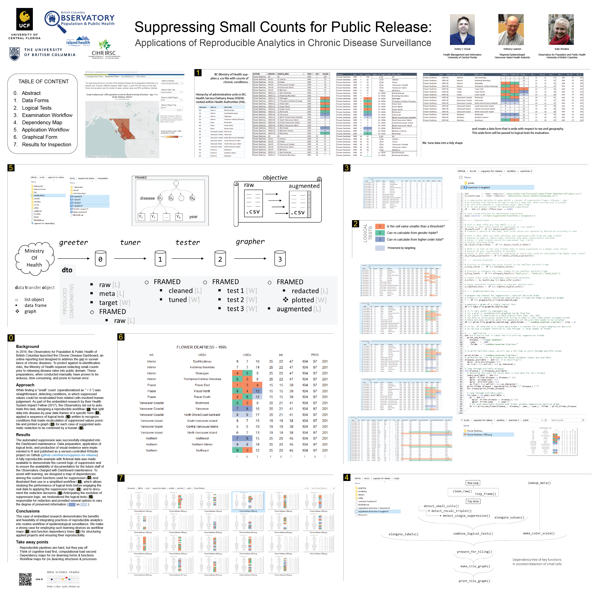

Suppressing Small Counts for Public Release
Applications of Reproducible Analytics in Chronic Disease Surveillance
Abstract
When a surveillance agency intends to release incidence counts of some health conditions (like in BC Chronic Disease Dashboard), one must take precaution NOT to disclose values considered “too small”, which may present a privacy/re-identification risk. Howeever, redacted values sometimes can be re-calculated from the context, so an analyst must detect these patterns and redact more values in order to remove the possiblity of re-calculation. To avoid manual redaction, which is prone to human error and lacks transparency, BC Observatory for Population and Public Health has developed a suite of R functions to arrive at recommendation for redaction automatically, based on logical tests developed for standard data forms.
Poster presented at the 2019 conference of the Canadian Association for Health Services and Policy Research, Halifax, Nova Scotia.

Note: The number in parentheses (1) refers to the section of the poster.
Take away points
- Reproducible pipelines are hard, but they pay off
- Think of cognitive load first, computational load second
- Invest into dependency maps for (re-)learning forms & functions
- Invest into workflow maps for (re-)learning structures & processes
Background
In 2016, the Observatory for Population & Public Health of British Columbia launched the Chronic Disease Dashboard, an online reporting tool designed to address the gap in surveillance of chronic diseases. To protect against re-identification risks, the Ministry of Health required redacting small counts prior to releasing disease rates into public domain. These preparations, when conducted manually, have proven to be arduous, time consuming, and prone to human error.
Approach
While finding a “small” count (operationalized as “ < 5 ”) was straightforward, detecting conditions, in which suppressed values could be recalculated from related cells involved human judgement. As part of the embedded research by their Health System Impact Fellow (2017), the Observatory set out to automate this task, designing a reproducible workflow ( see section 5 of the poster ) that split data into disease-by-year data frames of a specific form ( 1 ), applied a sequence of logical tests ( 2 ) written to recognize conditions that made recalculation of suppressed values possible and printed a graph ( 6 ) for each case of suggested automatic redaction to be confirmed by a human ( 7 ).
Results
The automated suppression was successfully integrated into the Dashboard maintenance. Data preparation, application of logical tests, and production of visual evidence were implemented in R and published as a version-controlled RStudio project on Github github.com/ihacru/suppress-for-release. A fully reproducible example with fictional data was made available to demonstrate the current logic of suppression and to ensure the availability of documentation for the future staff of the Observatory charged with Dashboard maintenance. To assist with learning, we designed a map of dependencies among the custom functions used for suppression ( 4 ) and illustrated their use in a simplified workflow ( 3 ), which allows studying the performance of logical tests before engaging the real data to applying the suppression logic ( 5 ) and to document the redaction decisions ( 7 ) Anticipating the evolution of suppression logic, we moduralized the logical tests ( 2 ) responsible for redaction and provided several options to vary the degree of preserved information ( blue vs light blue ).
Conclusions
This case of embedded research demonstrates the benefits and feasibility of integrating practices of reproducible analytics into routine workflow of epidemiological surveillance. We make a strong case for employing such learning devices as workflow maps ( 5 ) and function dependency trees ( 4 ) for structuring applied projects and ensuring their reproducibility.
Andriy Koval
Assistant Professor of Health Management and Informatics
I am a data scientist with background in quantitative methods and interest in data-driven models of health and aging